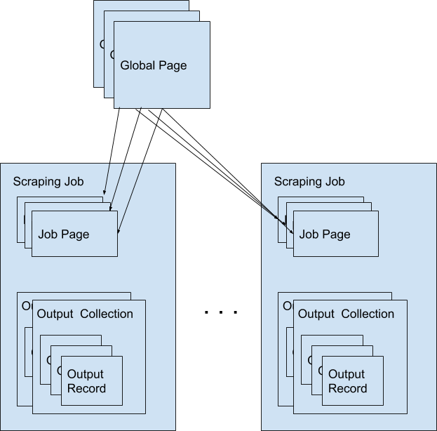

High Level Concepts¶
Scrapers¶
A scraper is a group of tasks that allows users to extract data from the internet. Scrapers consists of a Seeder and Parsers (Currently we only support Ruby language).
Available commands¶
$ answersengine scraper help
Commands:
answersengine scraper create <scraper_name> <git_repository> # Create a scraper
answersengine scraper deploy <scraper_name> # Deploy a scraper
answersengine scraper deployment SUBCOMMAND ...ARGS # manage scrapers deployments
answersengine scraper help [COMMAND] # Describe subcommands or one specific subcommand
answersengine scraper job SUBCOMMAND ...ARGS # manage scrapers jobs
answersengine scraper list # List scrapers
answersengine scraper log <scraper_name> # List log entries related to a scraper's current job
answersengine scraper output SUBCOMMAND ...ARGS # view scraper outputs
answersengine scraper page SUBCOMMAND ...ARGS # manage pages on a job
answersengine scraper show <scraper_name> # Show a scraper
answersengine scraper start <scraper_name> # Creates a scraping job and runs it
answersengine scraper stats <scraper_name> # Get the current stat for a job
answersengine scraper update <scraper_name> # Update a scraper
Global Pages¶
All web pages that has been fetched by Fetch on behalf of users are stored in a shared cache, called Global Pages. Any web pages that you need to scrape will re-use this global pages if they fit within your freshness-type. If they don’t match your freshness-type, you can specifically force-fetch them from your scraper and job settings.
Available Commands¶
$ answersengine globalpage help
Commands:
answersengine globalpage content <gid> # Show content of a globalpage
answersengine globalpage failedcontent <gid> # Show failed content of a globalpage
answersengine globalpage help [COMMAND] # Describe subcommands or one specific subcommand
answersengine globalpage show <gid> # Show a global page
Jobs¶
When a scraper is run, it creates a scraping job, and will execute the seeder script that you’ve specified. As pages gets fetched, it will get parsed by the parser script that is related to that page.
A job has one of following possible statuses:
| Status | Description |
|---|---|
| active | Job is running |
| paused | User manually paused the job |
| cancelled | User manually cancelled the job, or it is cancelled because another scheduled job on the same scraper has been started. |
| done | Job is done when there are no more to_fetch or to_parse |
Available Commands¶
$ answersengine scraper job help
scraper job commands:
answersengine scraper job cancel <scraper_name> # cancels a scraper's current job
answersengine scraper job help [COMMAND] # Describe subcommands or one specific subcommand
answersengine scraper job list <scraper_name> # gets a list of jobs on a scraper
answersengine scraper job pause <scraper_name> # pauses a scraper's current job
answersengine scraper job resume <scraper_name> # resumes a scraper's current job
answersengine scraper job show <scraper_name> # Show a scraper's current job
answersengine scraper job update <scraper_name> # updates a scraper's current job
Paused Jobs¶
Sometimes you may find that the status of your job has changed to “paused” on its own. This is a result of your scraper not having any more pages to process because the remaining pages are either in the parsed or failed queue. Specifically, a job will pause if there are no more pages remaining in the following queues:
to_fetch
fetching
to_parse
parsing_started
parsing
To check if there are any pages in the failed queue you can use the following stats command.
answersengine scraper stats <scraper_name>
You should look at the following failed queue counters and if there are failed pages:
fetching_failed
fetching_dequeue_failed
parsing_failed
parsing_dequeue_failed
Next step is to fix those failed pages and resume your job. You can use the following commands to list those pages and find the failed ones:
answersengine scraper page list <scraper_name> --fetch-fail # to list fetch failed pages
answersengine scraper page list <scraper_name> --parse-fail # to list parse failed pages
Then, once you have updated your scraper to fix any issues, you can refetch or reparse these pages using these commands:
answersengine scraper page refetch <scraper_name> --gid <gid> # refetch an specific page
answersengine scraper page refetch <scraper_name> --fetch-fail # refetch all fetch failed pages
answersengine scraper page refetch <scraper_name> --parse-fail # refetch all parse failed pages
answersengine scraper page reparse <scraper_name> --gid <gid> # reparse an specific page
answersengine scraper page reparse <scraper_name> --parse-fail # reparse all parse failed pages
After resetting at least one page, you can resume the job:
answersengine scraper job resume <scraper_name>
Job Workers¶
Job workers are units of capacity that a job can run. A job needs at least one worker for it to run.
There are two kinds of workers:
- Standard Worker. This allows you to fetch using regular HTTP method.
- Browser Worker. This will fetch using a real browser, and will render and execute any javascripts that are available on the page.
Typically one worker can has the capacity to perform:
- Fetching and parsing of up to 100,000 fresh pages per month from the internet. *
- Fetching and parsing of up to 300,000 pages per month from the shared cache(global page contents). *
- This totals to about 400,000 parsed pages per month. *
* performance varies based on many factors, including: target server capacity, bandwidth, size of pages, etc.
Note: If you need your scraping results sooner, you can purchase more capacity by adding more workers to your account and assigning more workers to your scraper. When you have multiple unused workers on your account, you can choose to either run multiple scrape jobs at once, or you can assign multiple workers to a single scrape job
Job Pages¶
Any Pages that are added by your scraper so that AnswersEngine can fetch them, are all contained within the job, these are called job pages.
ForceFetch, when set to true, will force a page to be re-fetched if it is not fresh, as determined by freshness-type(day, week, month, year, any) that you have set on the scraper. Note: ForceFetch only works on pages that already exist in the Fetch platform. It has no effect on pages that does not exist, therefore, it will fetch the pages regardless if you force them to or not.
Vars. A job page can have user-defined variables, that you can set when a page is enqueued. This vars can then be used by the parser to do as you wish
Treat a page like a curl HTTP request, where you are in control of lower level things, such as, request method, body, headers, etc.
The following JSON describes the available options that you can use when enqueueing any page to Fetch via a script:
pages << {
"page_type": "listings",
"method": "GET",
"url": "https://www.ebay.com/b/Apple-iPhone/9355/bn_319682",
"headers": {"Foo": "Bar"},
"body": "body here",
"no_redirect": false,
}
Available Commands¶
$ answersengine scraper page help
scraper page commands:
answersengine scraper page add <scraper_name> <url> # Enqueues a page to a scraper's current job
answersengine scraper page help [COMMAND] # Describe subcommands or one specific subcommand
answersengine scraper page list <scraper_name> # List Pages on a scraper's current job
answersengine scraper page log <scraper_name> <gid> # List log entries related to a job page
answersengine scraper page refetch <scraper_name> # Refetch Pages on a scraper's current job
answersengine scraper page reset <scraper_name> <gid> # Reset fetching and parsing of a page in a scraper's current job
answersengine scraper page show <scraper_name> <gid> # Show a page in scraper's current job
answersengine scraper page update <scraper_name> <gid> # Update a page in a scraper's current job
Job Outputs¶
Outputs are generated by parser scripts. Outputs are contained within a collection that you can specify. By default, if you don’t specify a collection, the output will be stored in the “default” collection. Job outputs are in JSON format.
Available Commands¶
$ answersengine scraper output help
scraper output commands:
answersengine scraper output collections <scraper_name> # list job output collections that are inside a current job of a scraper.
answersengine scraper output help [COMMAND] # Describe subcommands or one specific subcommand
answersengine scraper output list <scraper_name> # List output records in a collection that is in the current job
answersengine scraper output show <scraper_name> <record_id> # Show one output record in a collection that is in the current job of a scraper
Job Error Logs¶
When an error occurs inside a job, it gets logged. And you can check to see the errors that occur on a job, or even on a particular page
Available Commands¶
$ answersengine scraper help log
Usage:
answersengine scraper log <scraper_name>
Options:
j, [--job=N] # Set a specific job ID
H, [--head=HEAD] # Show the oldest log entries. If not set, newest entries is shown
p, [--parsing=PARSING] # Show only log entries related to parsing errors
s, [--seeding=SEEDING] # Show only log entries related to seeding errors
m, [--more=MORE] # Show next set of log entries. Enter the `More token`
- Description:
- Shows log related to a scraper’s current job. Defaults to showing the most recent entries
$ answersengine scraper page help log
Usage:
answersengine scraper page log <scraper_name> <gid>
Options:
j, [--job=N] # Set a specific job ID
H, [--head=HEAD] # Show the oldest log entries. If not set, newest entries is shown
p, [--parsing=PARSING] # Show only log entries related to parsing
m, [--more=MORE] # Show next set of log entries. Enter the `More token`
- Description:
- Shows log related to a page in the job. Defaults to showing the most recent entries
Parsers¶
Parsers are scripts that you create within a scraper in order to extract data from a web page, or to enqueue other pages. The parser scripts are executed as soon as a page is downloaded. You can create a script for a particular type of page, for example, if you were to scrape an e-commerce website, you can have an “index” page type, and a “detail” page type. When you enqueue a page to AnswersEngine, you need to specify the page_type so that the matching parsers for that page_type will be executed.
Reserved words or methods in parser scripts:¶
page # => Hash. returns the page metadata
page['vars'] # => Hash. returns the page's user-defined variables
content # => String. returns the actual response body of the page
pages # => []. the pages to be enqueued, which will be fetched later
outputs # => []. the array of job output to be saved
save_pages(pages) # Save an array of pages right away and remove all elements from the array. By default this is not necessary because the parser will save the "pages" variable. However, if we are saving large number of pages (thousands), it is better to use this method, to avoid storing everything in memory
save_outputs(outputs) # Save an array of outputs right away and remove all elements from the array. By default this is not necessary because the parser will save the "outputs" variable. However, if we are saving large number of outputs (thousands), it is better to use this method, to avoid storing everything in memory
Available Commands¶
$ answersengine parser help
Commands:
answersengine parser exec <scraper_name> <parser_file> <GID>...<GID> # Executes a parser script on one or more Job Pages within a scraper's current job
answersengine parser help [COMMAND] # Describe subcommands or one specific subcommand
answersengine parser try <scraper_name> <parser_file> <GID> # Tries a parser on a Job Page
Seeder¶
Seeder script is a script that is executed at the start of any job, that allows you to enqueue URLs that needs to be fetched on by AnswersEngine.
Reserved words or methods in seeder scripts:¶
pages # => []. The pages to be enqueued, and will be fetched later
outputs # => []. the array of job output to be saved
save_pages(pages) # Save an array of pages right away and remove all elements from the array. By default this is not necessary because the seeder will save the "pages" variable. However, if we are seeding large number of pages (thousands), it is better to use this method, to avoid storing everything in memory
save_outputs(outputs) # Save an array of outputs right away and remove all elements from the array. By default this is not necessary because the seeder will save the "outputs" variable. However, if we are saving large number of outputs (thousands), it is better to use this method, to avoid storing everything in memory
Available Commands¶
$ answersengine seeder help
Commands:
answersengine seeder exec <scraper_name> <seeder_file> # Executes a seeder script onto a scraper's current job.
answersengine seeder help [COMMAND] # Describe subcommands or one specific subcommand
answersengine seeder try <scraper_name> <seeder_file> # Tries a seeder file
Exporters¶
Exporters are a set of configurations that allows you to export data from Fetch into various formats. We currently have several different exporters: JSON, CSV, and Content. To add an exporter, you simply just add some lines of code under your exporters section of your config.yaml like the following example:
seeder:
...
parsers:
...
# the following lines define exporters...
exporters:
- exporter_name: products_json_short # Example JSON Exporter
exporter_type: json
collection: products
write_mode: line
limit: 100
offset: 10
- exporter_name: details_content_short # Example Content Exporter
exporter_type: content
page_type: details
limit: 100
offset: 10
Once you have added the above configuration, you need to deploy the scraper first before you can start creating exports. IMPORTANT: Exporter Names must be unique per scraper, because this is how you’re going to run the exporter with.
Available Exporter Commands¶
$ ae scraper exporter help
scraper exporter commands:
answersengine scraper exporter list <scraper_name>
answersengine scraper exporter show <scraper_name> <exporter_name>
answersengine scraper exporter start <scraper_name> <exporter_name>
Available Export Commands¶
$ ae scraper export help
scraper export commands:
answersengine scraper export download <export_id>
answersengine scraper export list # Gets a list
answersengine scraper export show <export_id> # Show an export
Automatically Start Exporters¶
You can automatically start any exporter as soon as the scrape job is done. To do this, simply add start_on_job_done: true to your exporter configuration. The following is an example config file that has the exporters ready to auto-start.
seeder:
...
parsers:
...
# the following lines define exporters...
exporters:
- exporter_name: products_json_short # Example JSON Exporter
exporter_type: json
collection: products
write_mode: line
limit: 100
offset: 10
start_on_job_done: true # This field will auto start this exporter
- exporter_name: details_content_short # Example Content Exporter
exporter_type: content
page_type: details
limit: 100
offset: 10
start_on_job_done: true # This field will auto start this exporter
JSON Exporter¶
Json exporter allows you to export a collection into json formatted file. Typically, a JSON Exporter looks like this:
exporter_name: <your_exporter_name_here> # Must be unique
exporter_type: json
collection: <collection_here>
write_mode: line # can be `line`,`pretty`, `pretty_array`, or `array`
limit: 100 # limits to how many records to export
offset: 10
start_on_job_done: true
JSON Write Modes¶
The JSON exporter supports four different write modes, based on your needs: line, pretty, pretty_array, and array.
Write mode of line will export a file with the following content:
{"foo1": "bar1"}
{"foo1": "bar1"}
{"foo1": "bar1"}
Write mode of pretty will export a file with the following content:
{
"foo1": "bar1"
}
{
"foo1": "bar1"
}
{
"foo1": "bar1"
}
Write mode of pretty_array will export the following content:
[{
"foo1": "bar1"
},
{
"foo1": "bar1"
},
{
"foo1": "bar1"
}]
Write mode of array will export the following content:
[{"foo1": "bar1"},
{"foo1": "bar1"},
{"foo1": "bar1"}]
CSV Exporter¶
CSV exporter allows you to export a collection into a CSV formatted file. Typically, a CSV Exporter looks like this:
exporter_name: <your_exporter_name_here> # Must be unique
exporter_type: csv
collection: <collection_here>
no_headers: false # Specifies if you want the headers row. Default: false
limit: 100 # limits to how many records to export
start_on_job_done: true
fields:
- header: "gid"
path: "_gid"
- header: "some_value"
path: "some_value"
- header: "some_nested_value"
path: "path.to.your.value"
CSV Fields¶
Pay careful attention to this fields configuration, as, this is where you need to specify the header and the path, so that the CSV exporter knows how to write the csv rows. A CSV Field, contains two attributes, Header, and Path.
Header allows you to set the value of the csv header.
Path allows the CSV exporter to traverse your output record in order to find the correct value based on the dot “.” deliminator. Take a look at the following output record:
{
"foo1": "bar1",
"foo2": { "sub2" : "subvalue2" }
}
In the above example, the path “foo1” produces the value: “bar1” And the path “foo2.sub2” produces the value “subvalue2”
With this combination of Header and Path, the CSV exporter should cover a lot of your use cases when it comes to exporting CSVs. However, if you feel that you have a rare scenario where you’re not able to traverse the output very well by using Path, you should code your parser scripts to output a simpler schema.
Content Exporter¶
Content exporter allows you to export the actual content of the page that has been fetched for you. You can export any contents including html, pdf, images, etc. The difference between Content exporter and other exporters, is that, it exports from the list of Pages that you have on your scraper job.
When the exported has done exporting, you will get the actual content files, as well as a CSV file that contains a list of all the contents that has been exported. You can use that CSV file, to know what content files has been exported. This is especially useful, if you want to ingest and process these content files in another system.
Typically, a Content Exporter looks like this:
exporter_name: <your_exporter_name_here> # Must be unique
exporter_type: content
page_type: <page_type>
filename_var: <filename_var> # variable to refer to, when naming the file
ignore_extensions: false # filename will have no extension, if true
include_failed_contents: false # self explanatory. Helpful for troubleshooting
limit: 100 # limits to how many records to export
start_on_job_done: true
Exporting Failed Contents¶
You can specify to export failed contents as well, this will come handy for troubleshooting purposes. On your exporter’s config, set the following to true:
include_failed_contents: true
When you have specified this to be true, this exporter will save any failed contents in a separate directory.
Note: Keep in mind that failed contents are not saved as a file with their GID as their default filename. They are saved with their CID(Content ID) as the filename. The reason is to remove duplication, as most failed requests to websites display the same exact content repetitiously.
Customizing the File Names¶
By default, the Content exporter export the content files, with a standard naming convention of:
<gid>.<ext>
If you want to specify a name for the files, you need to set that in the page’s variable, and tell our exporter about what variable it should be. For example, let’s say you have the following Page
{
"gid": "www.ebay.com-4aa9b6bd1f2717409c22d58c4870471e",
"url": "https://www.ebay.com/b/Apple-iPhone/9355/bn_319682",
}
By default, this will export the page content and save it with the following filename:
www.ebay.com-4aa9b6bd1f2717409c22d58c4870471e.html
Let’s say you want this file to be saved with this filename:
9335.html
You would need to enqueue that page with a variable, like so:
pages << {
url: "https://www.ebay.com/b/Apple-iPhone/9355/bn_319682",
vars: {
my_filename: "9335", # notice we added a "my_filename" var
}
}
And then we would need to set the exporter’s filename_var config like the following:
exporter_name: <your_exporter_name_here>
exporter_type: content
page_type: <page_type>
filename_var: my_filename # Need to tell the exporter how to name the file
And that’s it. This particular content will be then saved as a file with the following filename:
9335.html
Finisher¶
Finisher script is a script that is executed at the end of any job. This allows you to perform actions after your scraper job is done such as creating summaries and starting exporters.
Reserved words or methods in finisher scripts:¶
job_id # The id of the job that has just finished
Available Commands¶
answersengine finisher help
Commands:
answersengine finisher exec <scraper_name> <finisher_file> # Executes a finisher script onto a scraper's current job.
answersengine finisher help [COMMAND] # Describe subcommands or one specific subcommand
answersengine finisher try <scraper_name> <finisher_file> # Tries a finisher file